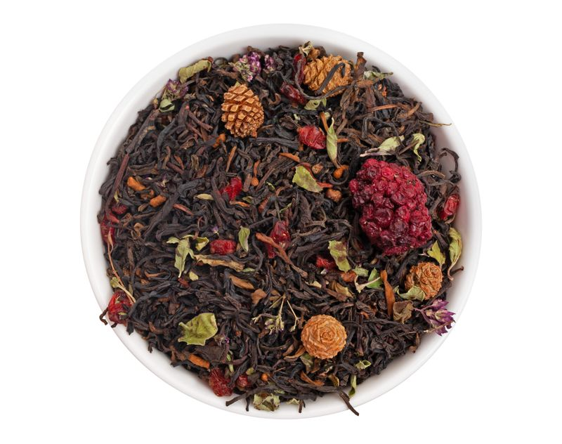

Сердце Сибири

Описание
Плотный и насыщенный купаж на основе черного чая, шу-пуэра и гречишного чая.
Характеристики:
- 3-4 грамма на чашку 200 мл
- 85-95 °C, 3-5 минут после закипания
- 3-5 минут дать на заваривание
Подробное описание
Плотный и насыщенный купаж на основе черного чая, шу-пуэра и гречишного чая. Дополнен ягодами ежевики и барбариса, ароматной душицей и украшен шишками, придающими настою легкий хвойный оттенок.